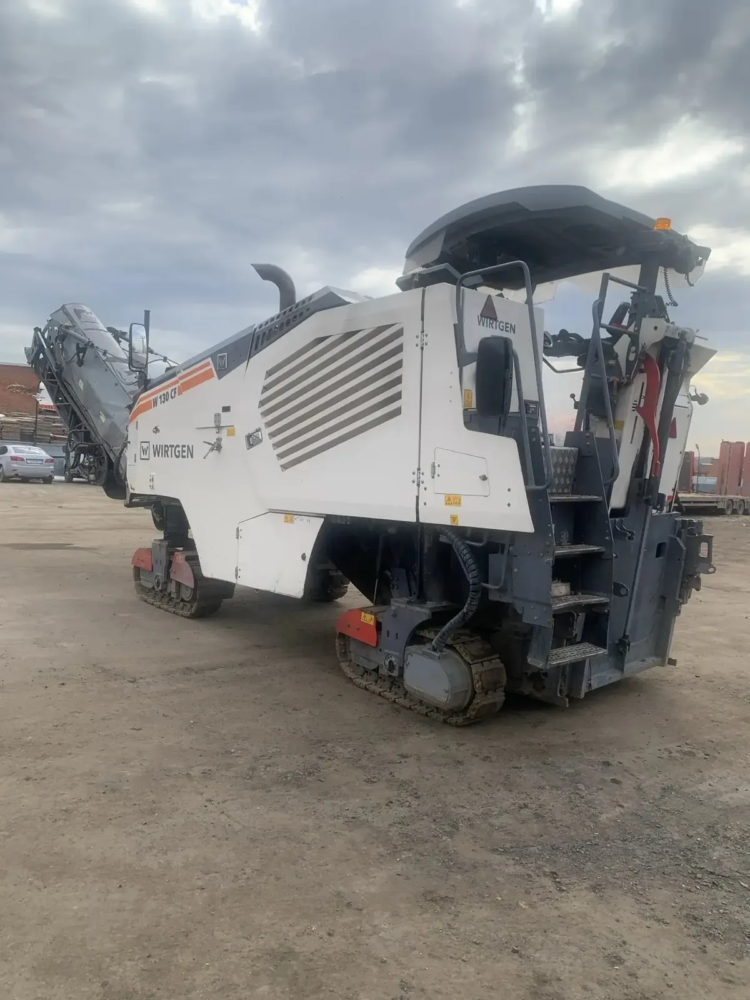

Фреза
Снимает покрытие на согласованную глубину.

Снятие старого покрытия
Первый этап восстановления асфальта: послойное снятие изношенного покрытия с погрузкой крошки в самосвалы.
Роль в ремонте
Фреза применяется при сплошном восстановлении покрытия, устранении колейности, выравнивании отметок и ремонте отдельными картами. Снятый материал подаётся транспортером непосредственно в самосвал.
Снимает покрытие на согласованную глубину.
Принимают и вывозят асфальтовую крошку.
Доставляет машину на объект и обратно.
Следующий этап
После фрезерования можем подобрать очистку, подгрунтовку, асфальтоукладчик, самосвалы со смесью и комплект катков.